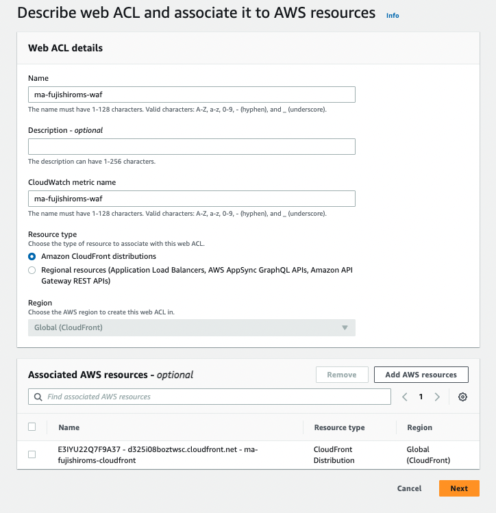
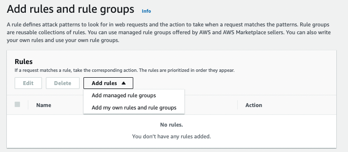
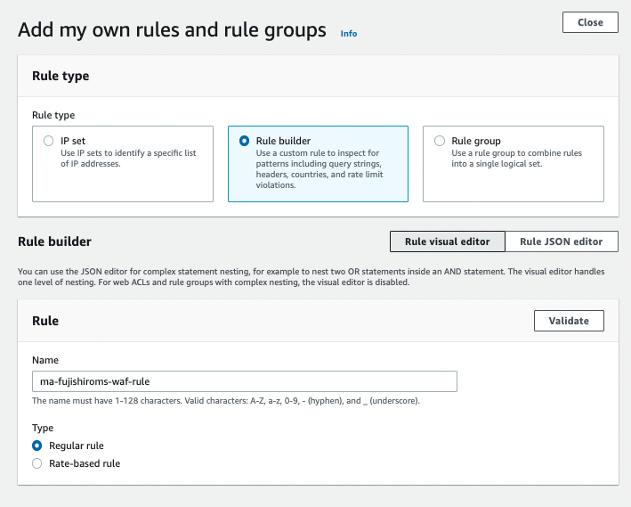
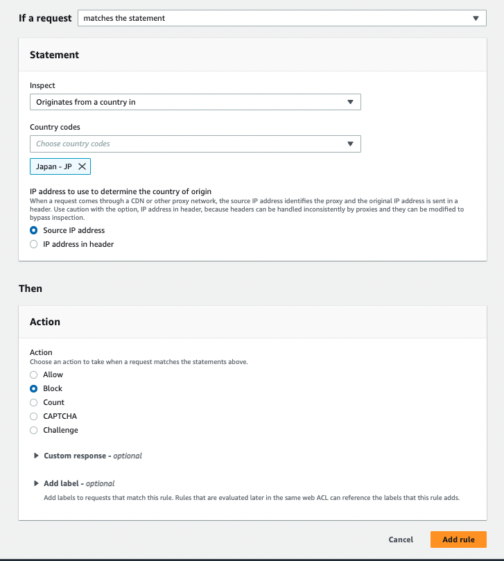
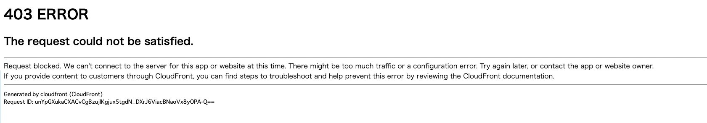

7. WAFの設定¶
WAFはWebアプリケーションファイアウォール（Web Application Firewall)機能である。
AWSのサービスに通信が届く前にAWS WAFがルールに従ってフィルタリングをする。
7.1. Cloud Frontに対して設定する¶
7.1.1. ACLの作成¶
WAF & Shieldの画面からCreate web ACLを選択
Resource TypeからAmazon CloudFront distributionsを選択し、Nameを入力して、Associated AWS resourceに対象のCloudFrontを選択

7.1.2. Ruleの作成¶
動作確認として、接続元が日本である場合に、接続を拒否するルールを設定する。
Add rulesからAdd my own rules and rule groupsを選択

Rule builderで、Rule名を設定し、ルールの中身であるStatementで、Originates form acountry in Japanを設定してBlockする。


その後はデフォルトのまま、Create web ACLを選択
cloud Frontに接続してみると、403Errorとなる。
